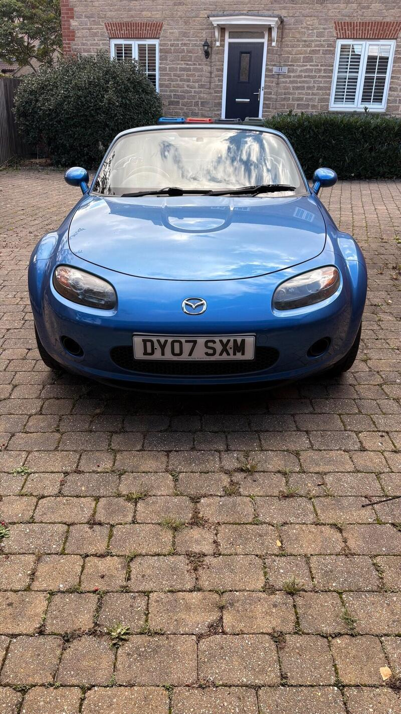
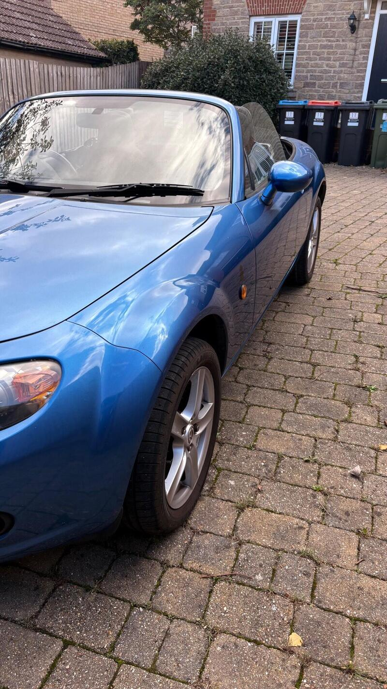
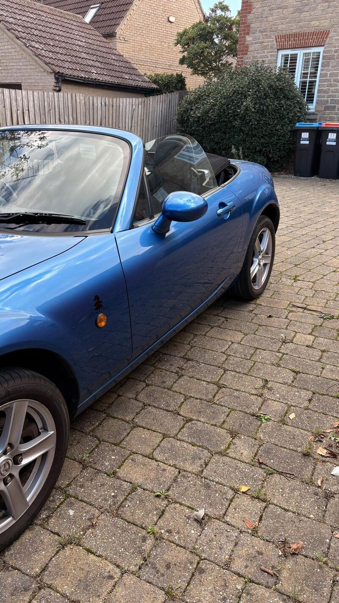
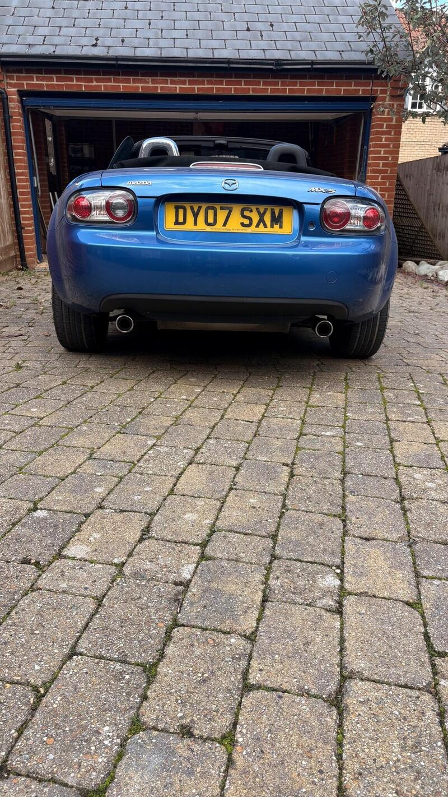

Seller photos from the AutoTrader ad.
Mazda MX-5 2.0i
A freshly sorted 2.0 NC at £2,195. Cheap and close, and the bigger engine is the fun one.
Key facts
| Price | £1,750 |
|---|---|
| Year | 2007 |
| Miles | 108,000 |
| Model | Mazda MX-5 2.0i |
| Colour | Blue |
| Registration | 2007 (07 reg) |
| Owners | 10 owners |
| Service history | Not stated |
| MOT (AutoTrader ad) | 17 Sep 2027 (ad) |
| MOT (seller's text) | Fresh MOT (ad) |
| Seller | Private |
| Location | Milton Keynes |
| From GU7 | 57 mi (AutoTrader) |
| Price cut | £2,195 → £1,750 on 15 Oct |
| Checked | 15 October 2026 |
Why buy it
- 2.0 i Option Pack, just MOT'd, serviced and checked over (ad)
- Private seller, only 57 mi from GU7
Things to check
The seller has only owned it for a few weeks, so ask for the full history
Check the rear subframe and sill ends
- Mazda MX-5 NC / NB weak spots
Rear subframe, rear arches and sill ends; NB sills and chassis rails. Underseal can hide rot. Engine mostly bulletproof; timing-chain tensioner, seizing calipers, rear diff leaks, cracking coolant tank.
Seller says (extract)
“I bought this a few weeks ago to use as a track toy but hadn't appreciated at 63 how small the car is. I got the car motd, serviced and checked over mechanically. Its a 2007 Mazda MX-5 with the i Option Pack trim. It is powered by a 2.0-litre petrol engine, which provides a responsive driving experience suitable for those who enjoy a traditional sports car feel. As a model from 2007, this vehicle represents a classic iteration of the MX-5 design, focusing on a balanced chassis and engaging handling characteristics that have made this series a staple on British roads. The car has a few points to mention, there are a few small rust bubbles on the surface easily fixed, the roof catch which holds the roof down when open needs adjusting or replacing but roof works fine, roof needs a good clean, have had the interior valeted and the fuel gauge sensor needs looking at no other known issues.…”